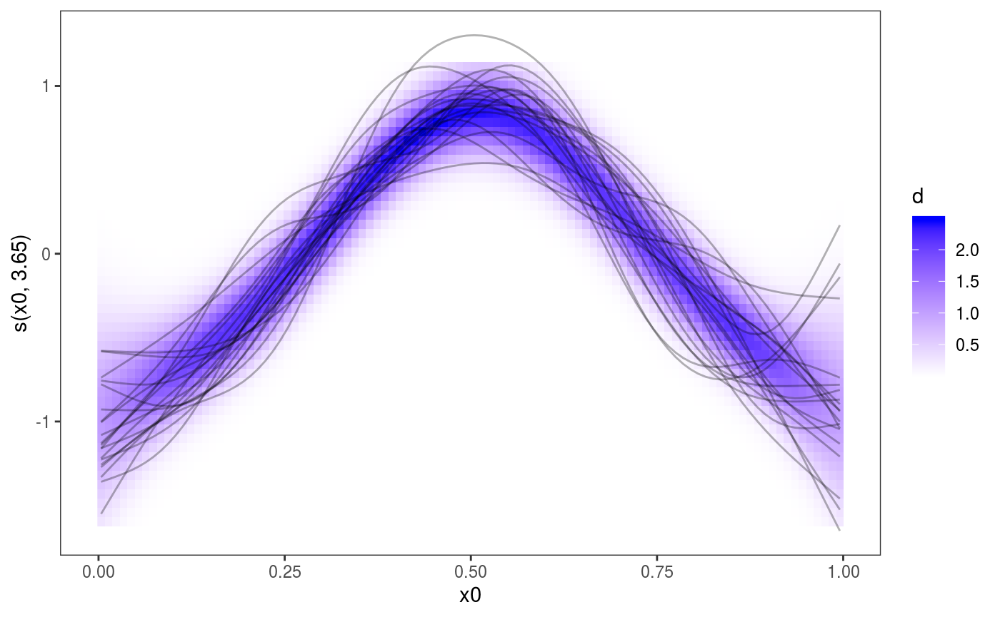
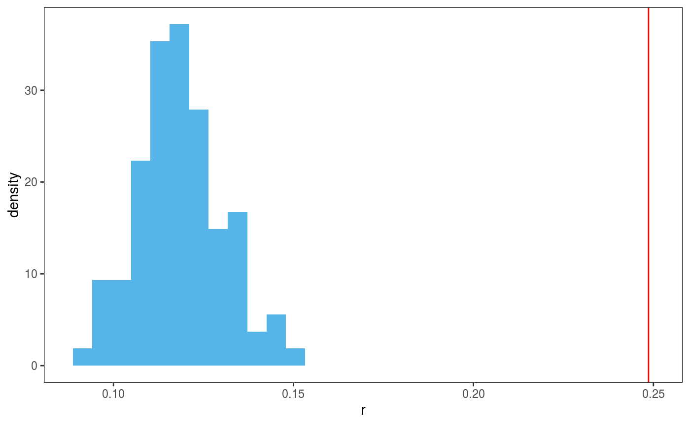
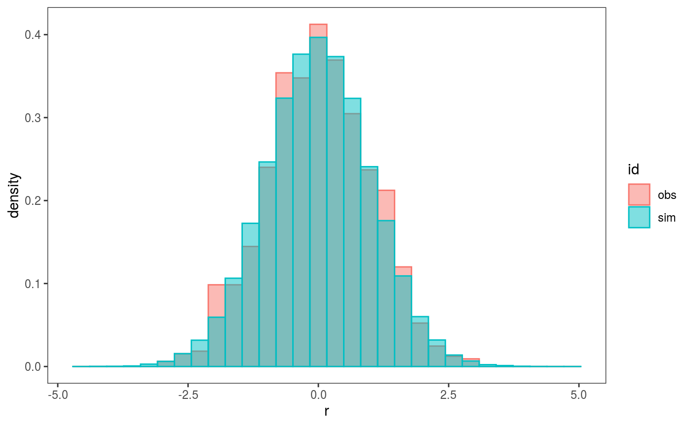
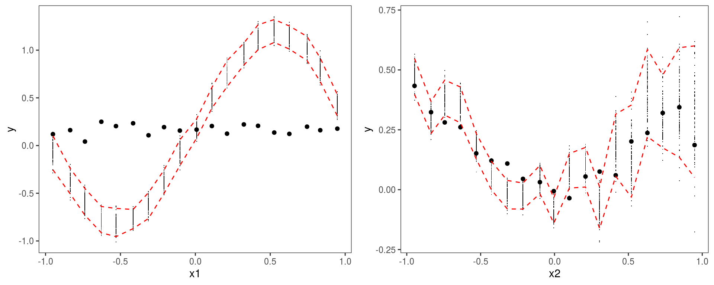
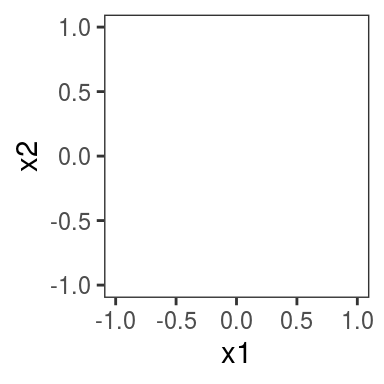
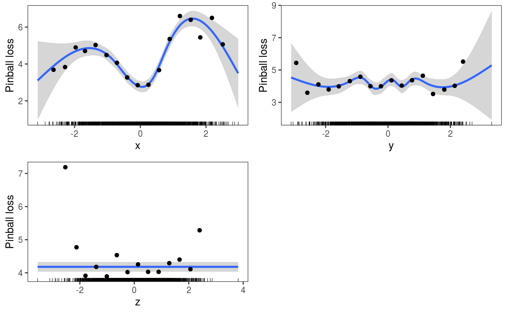
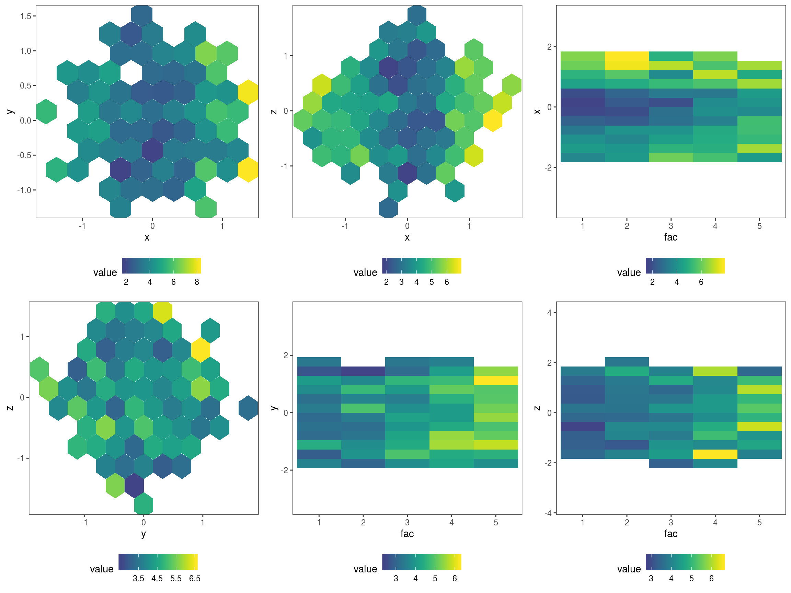

Bayesian posterior simulations and predictive checks
Matteo Fasiolo
March 04 2020
Source:vignettes/BayesPost.Rmd
BayesPost.RmdPosterior simulation and checking methods
Smooth effects simulations
As of version 0.1.3, the mgcViz R package (Fasiolo et al., 2018) includes some methods for posterior simulation. Here we describe how to simulate and visualize one dimensional smooth effects. We start by simulating Gaussian data from a standard GAM example:
library(mgcViz)
set.seed(49)
dat <- gamSim(1,n=400,dist="normal",scale=2, verbose = FALSE)
b <- gamV(y~s(x0)+s(x1)+s(x2)+s(x3), data=dat)To plot the first smooth effect, together with some posterior simulations, we can do:
Here the argument nsim is used to specify the number of posterior simulations to perform for this smooth and l_simLine is the layer used to plot the simulated smooths.
One reference supporting the use of posterior simulations for smooth effect uncertainty assessment is Bowman (2018), who also argues in favour of the use of “density strips” as alternative to the traditional mean + confidence interval effects plots, such as the one above. The l_fitDens layer can be used to add a conditional posterior density strip to 1D smooth effects plots, where the opacity is proportional to the conditional posterior density of the fitted effect, under the usual Gaussian approximation to the posterior. Here is an example:

Of course these methods can be applied to all the one dimensional smooth contained in the model:
Bayesian posterior predictive checks
Performing posterior predictive checks is important in the Bayesian modelling workflow, as explained for instance in Gabry (2019). There are several methods for performing posterior checks in mgcViz. We’ll start with in-sample checks, that is checks that compare the distribution of the observed responses \(y\) with that of the posterior simulations \(\tilde{y}\) given the covariates \(x\), where both \(y\) and \(x\) come from the training set (i.e. they have been used to estimate the model). Consider the following example, where the residuals variance depends on covariate x2:
library(mgcViz)
# Simulate some data
n <- 1e3
dat <- data.frame("x1" = runif(n, -1, 1), "x2" = runif(n, -1, 1))
dat$y <- with(dat, sin(3*x1) + 0.5 * x2^2 + pmax(x2, 0.2) * rnorm(n))
# Fit model and convert to "gamViz" object
b <- gam(y ~ s(x1)+s(x2), data = dat)
b <- getViz(b, nsim = 100, post = TRUE, unconditional = TRUE)The arguments of gam should be familiar, while in the call to getViz we used:
-
nsim: the number of posterior response simulations to be performed; -
post = TRUE: specifies that we want each vector of responses to be simulated using a different vector of parameters, which has been simulated from a Gaussian approximation to the posterior (see?getVizfor details); -
unconditional = TRUE: will be passed down to thevcov.gamfunction, and indicates that we want smoothing parameter uncertainty to be taken into account when simulating the parameter vectors from the posterior (see?vcov.gamfor details).
Now, b contains nsim vectors of \(n = 10^3\) responses simulated from the predictive posterior, which can be used to perform posterior model checks. We start with the simplest available method:
## `stat_bin()` using `bins = 30`. Pick better value with `binwidth`. Here we are comparing the empirical distribution of the observed residuals with that of the simulated ones, and it seems that the observed residuals distribution has fatter tails. To verify this, we can compare the 4th central moments of the observed and simulated residuals by doing:
Here we are comparing the empirical distribution of the observed residuals with that of the simulated ones, and it seems that the observed residuals distribution has fatter tails. To verify this, we can compare the 4th central moments of the observed and simulated residuals by doing:
## `stat_bin()` using `bins = 30`. Pick better value with `binwidth`. Here the histogram shows the distribution of the nsim = 100 simulated empirical 4th moments, while the vertical line is the 4th moment of the observed residuals. It is clear that the observed residuals have fatter tails.
Before concluding that we should use a fatter-tailed response distribution (e.g. a Student’s t), we verify whether the distribution of the residuals changes along some of the variables included in the model. In particular, we do:
Here the red intervals are a 95% posterior credible intervals for the residuals standard deviation, computed using the posterior simulations, while the black points are the standard deviation of the observed binned residuals (see ?l_gridCheck1D for details). It is clear that the residual variance increases for x2 > 0.2, as almost all points fall outside the credible intervals. Notice that the credible intervals computed using post = TRUE should be larger then those computing by setting post = FALSE (the default), because they take into account posterior parameter uncertainty. Similarly setting unconditional = TRUE should lead to slightly wider intervals, because smoothing parameter uncertainty is taken into account.
Before addressing the non-constant variance problem by using a more flexible model, notice that check1D is vectorized in the x argument, that is we can do:
Hence we can pass a list of variables names to check1D, which will produce a checking plot for each variable. Vectorization will also work if we pass a list of numeric vectors of the same length (for instance check1D(b, list(dat$x1, dat$x2)). Here the same l_densCheck layer has been used on both plots. The heatmap is red (blue) if the density of the observed residuals is lower than the model-based residual density (which is a standard normal here, because we are transforming the residuals to normal using type = tnorm). The plot on the left shows that the residuals have fatter tails across x1 (relative to what would be expected under a N(0,1) distribution), while the plot on the right shows the variance of the residuals is lower than expected for x2 < 0.2 and too high for x2 > 0.2. See ?l_densCheck for details.
The non-constant residual variance problem can be fixed by adopting a more flexible mean-variance Gaussian model (see ?gaulss for details):
b1 <- gamV(list(y ~ s(x1)+s(x2), ~ s(x2)), data = dat, family = gaulss,
aViz = list(nsim = 100, post = TRUE, unconditional = TRUE))where now we are usign the gamV shortcut, which first fits the model using gam and then it converts the fitted models using getViz. The aViz argument is a list or arguments which will be passed to getViz. We can then repeat the checks, for instance:
## `stat_bin()` using `bins = 30`. Pick better value with `binwidth`. which now looks fine.
To illustrate how to perform out-of-sample checks, assume that we have a testing set simulated as follows:
datTest <- data.frame("x1" = runif(n, -1, 1), "x2" = runif(n, -1, 1))
datTest$y <- with(datTest, 0.5 * x2^2 + pmax(x2, 0.2) * rnorm(n)) # Effect sin(3*x1) removed!and notice that we have removed the effect of variable x1, so that the model fitted on the original data set is not adequate for the testing set (but assume we don’t know it!).
To perform posterior predictive checks on the test set, we first need to perform some simulations using the new data set. This is done using the newdata argument in getViz, that is:
## NB no offset providedHaving performed the simulations, we can compare the means of the (binned) observed and simulated residuals distributions along each variable:
One important thing to point out is that the y-axis is labelled y here, not r as in previous calls to check1D. This is because b1 contains simulations based a new data set and, when this is the case, check1D does not transform the response \(y\) to residuals \(r\), but works directly on \(y\). This somewhat inconsistent behaviour is due to the fact that it is difficult to develop code that transforms responses to residuals using new data, given that the implementation of the residuals function depends on the family used in the gam call and often uses quantities defined inside the fitted gamObject.
However, to perform the checks on residuals it is sufficient to provide check1D with a function that will transform the responses to the chosen residuals type. For instance, we can create a transformation function as follows:
getResFun <- function(o, newd){
# Fooling the gamObject "o" by changing ...
o$fitted.values <- predict(o, newdata = newd) # ... fitted values
resFun <- function(y){
o$y <- y # ... and responses
out <- o$family$residuals(o)
return( out )
}
return( resFun )
}
resFun <- getResFun(o = b1, newd = datTest)Here, importantly, we are calling predict only once (when resFun is created), thus avoiding calling predict every time that resFun is called (it will be called nsim times by check1D to transform the simulated responses). Then we call check1d again:
 Here we have not explicitly added the
Here we have not explicitly added the l_gridCheck1D layer, so some default layers are added when the output of check1D is printed. In particular the last two plots could be reproduced exactly by doing:
pl <- check1D(b1, list("x1", "x2"), trans = resFun) + l_dens2D("cond") + l_gridCheck1D(mean, showReps = FALSE)
print(pl, pages = 1)where l_dens2D adds a heatmap representing the conditional density of the residuals \(p(y|x)\). Anyway, here the observed residuals show an anomalous sinusoidal pattern, which due to the fact that the training and test set have been generated using different mean models.
The fact that we supplied newdata in the call to getViz or gamV will be taken into account also by the check0D and check2D methods. In fact the code:
compares the distribution of observed and simulated residuals, both computed using covariates and responses the test data set. Same for check2D:
Where the l_gridCheck2D() layer has been added by default when the output of check2D is printed. To avoid this you can add some layer (such as l_rug) or tell print not to add any layer:
 which indeed produces an empty plot.
If we want to remove the test set from our object (because, for instance, we want to perform diagnostics on the training set), we just need to do:
## getViz: newdata removed from gamViz objectwhere we have left the newdata argument unspecified. Notice that at any call to getViz the simulated responses will be removed, so at the moment b1 does not contain any posterior simulation.
Generating “raw” predictive posterior simulations
In the examples shown above the posterior simulations where generated by getViz and then processed by the check0D, check1D and check2D methods. However, the responses are actually simulated by the postSim function, which is called by getViz. Hence, if you just want to simulate some responses from the predictive posterior, you should use this function. Here is an example:
library(mgcViz)
library(MASS)
b <- gam(accel~s(times, k=20), data=mcycle)
n <- 10
sim <- postSim(o = b, nsim = n, method = "qf", unconditional = TRUE)The output, sim, is a matrix where each row contains a vectors of responses, simulated using a vector of regression coefficients simulated from a Gaussian approximation to the posterior. As before the unconditional argument is passed to vcov.gam, while method is passed to simulate.gam and indicates the response simulation method used. Notice that postSim and simulate.gam (which simulates responses for fixed parameters) work directly on the output of gam, hence it is not necessary to use getViz to transform a gamObject into a gamViz object (or to use the gamV shortcut).
It is also possible to store the simulated vectors of regression coefficients and to transform the simulated responses, using the savePar and trans arguments, that is:
## List of 2
## $ simY : num [1:10, 1:2] -30 -25.9 -25.8 -22.3 -26 ...
## $ simBeta: num [1:10, 1:20] -26.8 -26 -24.8 -23.7 -26.2 ...Here postSim returns a list, where simY contains the simulated (transformed) responses and simBeta the simulated parameter vectors. The function trans can return either a vector or a scalar, and it can be useful when we want to save memory (for instance here we are storing only mean and variance of each simulated vector of responses).
Quantifying prediction error under custom loss functions
The following section is somewhat out of place, because we don’t perform any posterior simulation here. But it still belongs here to some degree, as it focuses on model checking. In particular, the following explains how to assess the model’s in- or out-of-sample performance using loss functions. We start by simulating some data:
set.seed(44)
n <- 2e3
datL <- data.frame(x = rnorm(n),
y = rnorm(n),
z = rnorm(n),
fac = as.factor(sample(1:5, n, replace = TRUE)))
datL$ob <- with(datL, as.numeric(fac) + (x)^2 + 4*sin(x) + (y)^2 + z + 0.3*z^3 +
(2+2*as.numeric(fac)) * rnorm(n))Then we estimate the conditional quantile \(\tau = 0.3\), using a quantile GAM (QGAM) model:
## Estimating learning rate. Each dot corresponds to a loss evaluation.
## qu = 0.3...........doneIt is interesting to use a QGAM model in this section, because it is based on the so-call “pinball” loss function, not on a probabilistic model of the response distribution (see Koenker (2005) for an introduction to quantile regression and Fasiolo et al. (2017) for details on the QGAM methods used here). Because of this, performing posterior predictive checks by simulating responses from the model does not make sense (there is no model for \(p(y|x)\)), and it is better to focus on the loss function of interest.
Suppose we have a test set, generated as follows:
datT <- data.frame(x = rnorm(n),
y = rnorm(n),
z = rnorm(n),
fac = as.factor(sample(1:5, n, replace = TRUE)))
datT$ob <- with(datT, as.numeric(fac) + (x)^2 - 8*sin(x) + (y)^2 + z + 0.3*z^3 + # on training set -8*sin(x)
(2+2*as.numeric(fac)) * rnorm(n)) # was 4 * sin(x)where, for the purpose of illustration, the effect of variable x is different relative to the training set. To perform the checks, we first need to convert fit to a gamViz object:
Then, calling check0D will provide a histogram of the observed residuals:
## `stat_bin()` using `bins = 30`. Pick better value with `binwidth`.which is not particularly interesting for QGAMs, because they are based on a loss function (hence we don’t expect the residuals to follow a normal or any other parametric distribution). To perform loss-based checks we need to define a loss function, and here the natural one is the pinball loss:
pinball <- function(y, mu, qu){ # qu in quantile of interest
tau <- 1 - qu
d <- y - mu
l <- d * 0
l[d < 0] <- - tau*d[d<0]
l[d > 0] <- - (tau-1)*d[d>0]
return( l )
}which has the following shape:
par(mfrow = c(1, 3))
ys <- seq(-1, 1, by=0.01)
plot(ys, pinball(ys, 0, 0.1), type = 'l', col = 2, ylab = "Pinball loss", main = expression(qu == 0.1))
plot(ys, pinball(ys, 0, 0.5), type = 'l', col = 2, ylab = "Pinball loss", main = expression(qu == 0.5))
plot(ys, pinball(ys, 0, 0.9), type = 'l', col = 2, ylab = "Pinball loss", main = expression(qu == 0.9)) The loss can then be passed to check0D, which evaluates it at all data points:
check0D(fit,
type = "y",
trans = function(x, ...) pinball(x, predict(fit, newdata = datT), qu = 0.3)) +
l_dens1D() + l_rug() + xlab("Pinball loss") + theme(legend.position="none") The output plot shows an estimate of the observed pinball loss distribution. Importantly, in the call to check0D we have set type = "y" to make sure that the transformation trans will be applied to the raw observed responses (otherwise trans would be applied to residuals, which doesn’t probably make sense).
To verify how the loss changes across the covariates we can do:
pl <- check1D(fit,
x = list("x", "y", "z"),
type = "y",
trans = function(x, ...) pinball(x, predict(fit, newdata = datT), qu = 0.3)) +
geom_smooth() +
l_gridCheck1D(gridFun = function(x, ...) ifelse(length(x) > 5, mean(x), NA), level = 0) +
l_rug() + ylab("Pinball loss")
print(pl, pages = 1) The plots wrt to x and shows that the pinball loss changes considerably along that covariate (which makes sense, given that the model is misspecified wrt x). There are several things that need to be explained here:
- we used
x = list("x", "y", "z")to exploit the fact thatcheck1Dis vectorized wrt itsxargument; - we used a mixture of layers coming from
mgcViz(e.g.l_gridCheck1D) andggplot2(e.g.geom_smooth); - we set
level = 0in the call tol_gridCheck1Dto indicate that we don’t want to plot confidence intervals, because these are typically calculated using simulated residuals (and here we have not simulated any); - given that the black points (the mean pinball loss in each bin) don’t have any uncertainty information associated with them, we return NA when there are less than 5 observations in a bin to avoid plotting outliers (which could be misleading);
- again, we need to set
type = "y"in the call tocheck1Dfor the loss-function-based transformation to make sense.
We can also check how the out-of-sample pinball loss varies across the factor variable levels:
check1D(fit, "fac", type = "y",
trans = function(x) pinball(x, predict(fit, newdata = datT), qu = 0.3), useSim = FALSE) +
l_rug(sides = "b") + geom_boxplot() + ylab("Pinball loss") This plot shows that the pinball losses are getting larger along the factor levels, which makes sense given that the variance of the response is proportional to it (see the code used to simulate the data, above).
It is useful to point out at this point that you can use the listLayer function to get a list of the mgcViz layers that can be used with a particular plot, for instance:
## [1] "l_dens2D" "l_densCheck" "l_gridCheck1D" "l_gridQCheck1D"
## [5] "l_points" "l_rug"However notice that, while something like check1D(fit, "x", type = "y") + l_densCheck() would work here, the resulting plot would probably not be useful (we would be comparing the conditional density of the observed pinball losses with a standard normal, see ?densCheck). Hence, whether a particular layer is useful depends on the response transformation used, on the chosen model (e.g. GAM vs QGAM), etc.
We can also look at how the pinball loss on the test set changes across each pair of covariates:
plJo <- check2D(fit, list("x", "y", "z", "fac"), type = "y",
trans = function(x) pinball(x, predict(fit, newdata = datT), qu = 0.3)) +
l_gridCheck2D(function(.x) ifelse(length(.x)>10, mean(.x), NA), stand = F) +
theme(legend.position="bottom")
print(plJo, pages = 1) Here we have exploited the fact that check2D is vectorized wrt the x1 argument: when x1 is list of variable names and argument x2 is left unspecified, check2D will produce a plot for each unique pair of variables in x1. Another thing to notice is that we set stand = F, otherwise l_gridCheck2D would try to standardise the pinball losses using the loss calculated using the simulated responses, but we have no simulations (and, even if we had some, it is not clear whether such a stardardization would make sense in this case). The plots show that the loss is changing with x and increasing with fac, as expected (see how datL and datT have been generated).
The loss-based checks can of course be performed using standard (probabilistic) GAMs, for instance:
fitG <- gamV(list(ob ~ s(x) + s(y) + s(z) + fac, ~ fac), data = datL, family = gaulss,
aViz = list(newdata = datT))Then we can, for example, check how the Mean Squared Error (MSE) changes across x by doing:
ck <- check1D(fitG, x = "x", type = "y",
trans = function(x, ...)
(x - predict(fitG, newdata = datT)[ , 1])^2) # Raw residuals^2 on test set
ck + geom_smooth() +
l_gridCheck1D(gridFun = function(x, ...) ifelse(length(x) > 5, mean(x), NA), level = 0) +
l_rug() + ylab("MSE")One important thing to notice is that, if we had some simulated responses in the object, that is if we do:
then check1D would give us:
ck <- check1D(fitG, x = "x", type = "y",
trans = function(x, ...)
(x - predict(fitG, newdata = datT)[ , 1])^2) # Raw residuals^2 on test set
ck + geom_smooth() +
l_gridCheck1D(gridFun = function(x, ...) ifelse(length(x) > 5, mean(x), NA), level = 0) +
l_rug() + ylab("MSE") where the small black points are the MSEs calculated by l_gridCheck1D using the nsim vectors of binned simulated response. These are clearly not useful in this case and we can avoid plotting them by setting the showReps argument in l_gridCheck1D to FALSE. But the call the check1D above would still be quite slow, because the trans function is applied to all the nsim vectors of responses. To avoid this we can set useSim = FALSE in the call to check1D, which make so that the simulations are ignored by check1D and all graphical layers (e.g. l_gridCheck1D). For instance:
ck <- check1D(fitG, x = "x", type = "y",
trans = function(x, ...)
abs(x - predict(fitG, newdata = datT)[ , 1]), # Absolute error on test set
useSim = FALSE) # <- avoid using simulations
ck + geom_smooth() +
l_gridCheck1D(gridFun = function(x, ...) ifelse(length(x) > 5, mean(x), NA), level = 0) +
l_rug() + ylab("Mean Absolute Error (MAE)") The useSim argument is available also in check0D and check2D.
References
Bowman, D. W (2018). Graphics for uncertainty. Journal of the Royal Statistical Society: Series A.
Fasiolo, M., Goude, Y., Nedellec, R. and Wood, S.N, (2017). Fast calibrated additive quantile regression. arXiv preprint arXiv:1707.03307.
Fasiolo, M., Nedellec, R., Goude, Y. and Wood, S.N. (2018). Scalable visualisation methods for modern Generalized Additive Models. arXiv preprint arXiv:1809.10632.
Gabry, J., Simpson, D., Vehtari, A., Betancourt, M. and Gelman, A. (2018). Visualization in Bayesian workflow. Journal of the Royal Statistical Society: Series A.
Koenker, R. (2005). Quantile regression. Number 38. Cambridge university press.